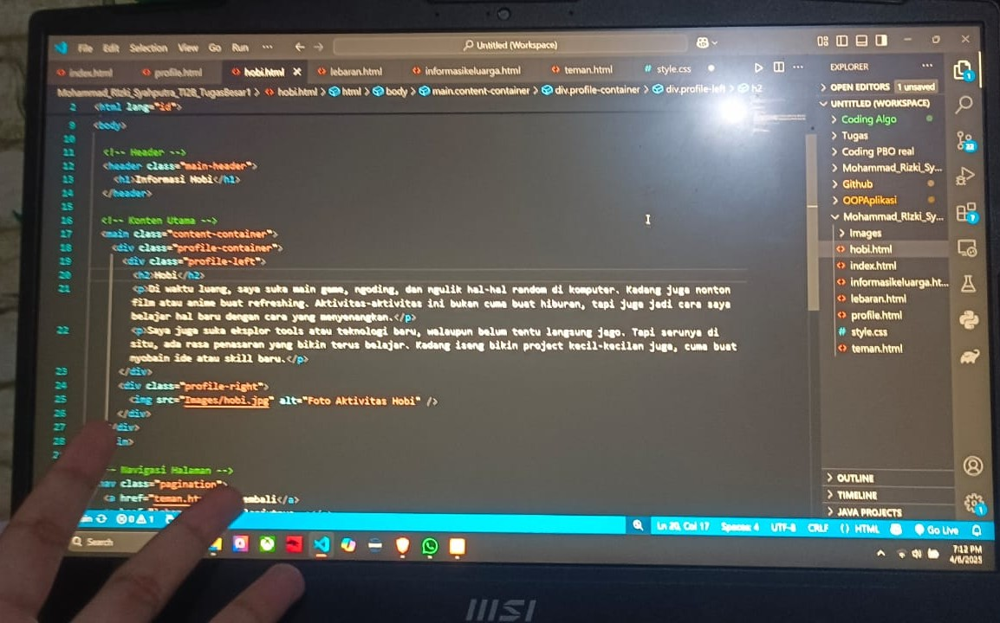

Hobi
Di waktu luang, saya suka main game, ngoding, dan ngulik hal-hal random di komputer. Kadang juga nonton film atau anime buat refreshing. Aktivitas-aktivitas ini bukan cuma buat hiburan, tapi juga jadi cara saya belajar hal baru dengan cara yang menyenangkan.
Saya juga suka eksplor tools atau teknologi baru, walaupun belum tentu langsung jago. Tapi serunya di situ, ada rasa penasaran yang bikin terus belajar. Kadang iseng bikin project kecil-kecilan juga, cuma buat nyobain ide atau skill baru.
